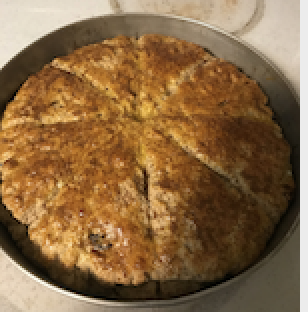
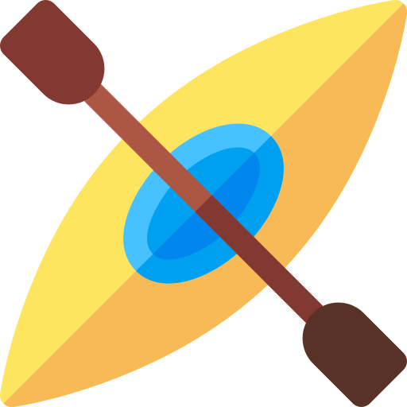
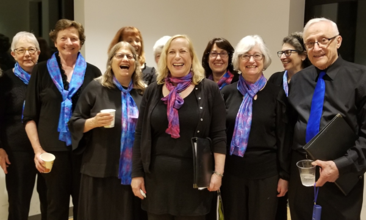

I'm Joan
an engineer

an engineer
I'm a software engineer. Also a cook, kayaker, choral singer, and mom to two very independent teenagers.
  For twenty years I have worked within and across engineering teams, as an individual contributor and leader of cross-team projects.
For eleven years before becoming an engineer, I taught students ages 14-21 who had been labeled 'emotionally disturbed and/or learning disabled.'
For the last dozen or so years, I was an infrastructure|tools engineer, responsible for software applications that managed builds or other processes within software companies.
© 2021 Joan Friedman.
Kayak, teamwork, and tools icons made by Freepik from www.flaticon.com